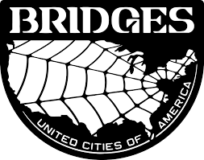
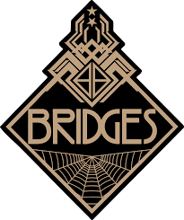
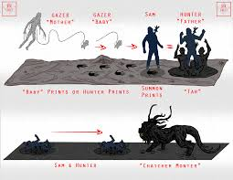
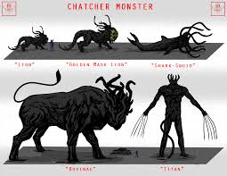

History of The United Cities of America
The Death Stranding Event
The Death Stranding was a catastrophic event that occurred on November 8, 2022. This event fundamentally changed our world, bringing about the appearance of B.T.s (Beached Things), timefall, and the separation of the living and the dead. The event caused massive destruction and led to the fragmentation of society.
Formation of the UCA

The United Cities of America was formed in response to the Death Stranding to protect and serve the remaining cities. The UCA was established with the primary goal of reconnecting the fragmented cities and rebuilding America. Through the efforts of Bridges and the development of the chiral network, we have made significant progress in reuniting our nation.
Bridges Organization


Bridges was founded as a response to the Death Stranding, with the mission of reconnecting America. The organization developed the chiral network, which allows for instant communication and resource sharing between connected cities. Bridges porters play a crucial role in delivering essential supplies and maintaining connections between cities.
Chiral Network
The chiral network is a revolutionary technology developed by Bridges. It allows for instant communication and data sharing between connected cities, making it possible to coordinate efforts and share resources. The network is protected by advanced security measures to ensure the safety of all connected cities.
Timefall and B.T.s
Timefall is a dangerous phenomenon that accelerates the aging of anything it touches. B.T.s (Beached Things) are invisible entities that can only be detected using specialized equipment. Both pose significant threats to human life and require constant vigilance and proper safety measures.
Current Status
Today, the UCA continues to work towards reconnecting all cities and ensuring the safety of its citizens. Through the efforts of Bridges and the support of the people, we are making progress in rebuilding our nation and creating a safer future for all.
Important Notice Regarding B.T.s
WARNING: Beached Things (B.T.s) are dangerous entities that roam the areas between cities. These invisible creatures can only be detected using specialized equipment. If you encounter a B.T., remain calm and follow these guidelines:
Do not make sudden movements or loud noises
Use your Odradek scanner to detect their presence
If a Odradek is not provided on arrival to the UCA, Contact Bridges services to request one
Seek shelter immediately if timefall is detected in your area
Contact Bridges emergency services if you suspect B.T. activity
Never attempt to interact with or approach B.T.s
Remember: B.T.s are attracted to living beings and can cause voidouts if not handled properly. Always travel with proper equipment and stay within designated safe zones.
B.T. Chase Sequence

A typical B.T. chase sequence. If caught, you will be dragged to a B.T. fight zone.
Known B.T. Types

Various types of B.T.s that may be encountered.
IMPORTANT: The type of B.T. you will encounter if caught is completely random. Each type presents unique challenges and requires different strategies to overcome. Always be prepared for any situation.